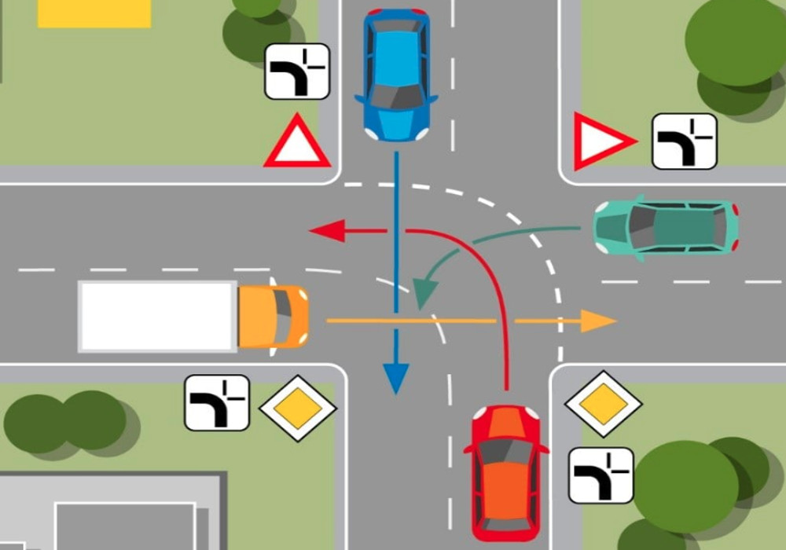
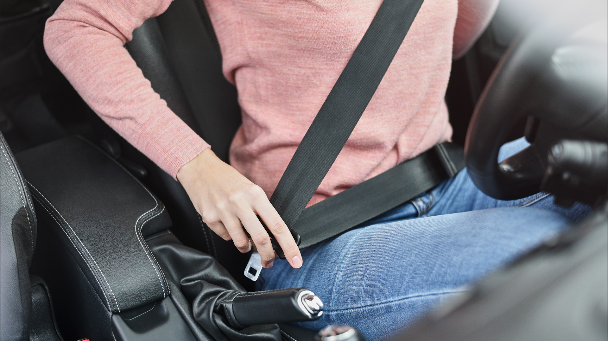

Pravilo prvenstva prolaza
U saobraćaju ima prednost vozilo koje dolazi sa desne strane. Ovo pravilo se odnosi na nepregledne raskrsnice.
Ograničenje brzine
U naselju je ograničenje brzine 50 km/h, a van naselja 80 km/h. Poštujte ograničenja brzine radi sigurnosti u saobraćaju.

Obavezno korišćenje sigurnosnog pojasa
Vozač i svi putnici u vozilu moraju koristiti sigurnosni pojas tokom vožnje. To povećava bezbednost u slučaju sudara.
